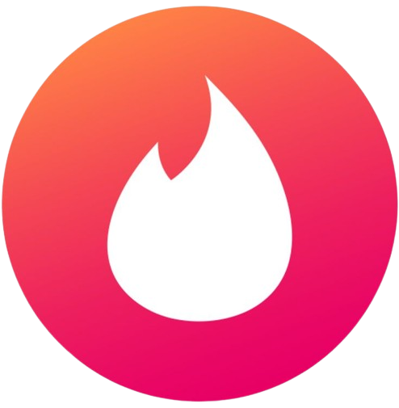

¿Qué es ROMantic?
ROMantic es una página de “citas” para conocer distintos tipos de memorias digitales. En lugar de buscar pareja, aquí haces match con memorias RAM, ROM, Flash y muchas más. Cada memoria tiene su propia “personalidad” y puedes deslizar para descubrir sus características, ventajas y curiosidades. Es una forma interactiva y entretenida de aprender sobre hardware y almacenamiento.
- Conoce y explora diferentes tipos de memorias como si estuvieras en una app de citas.
- Desliza tarjetas para descubrir información visual y curiosidades técnicas.
- Haz match con tus memorias favoritas y guárdalas para consultarlas después.
- Aprende jugando, con una interfaz moderna, intuitiva y responsiva.
- Pensada para estudiantes y amantes de la tecnología que quieren aprender de forma diferente.
Contacto y soporte
¿Tienes dudas, sugerencias o quieres colaborar?
Escríbenos a:
ROMantic777@outlook.comSíguenos en nuestras redes sociales:


Equipo ROMantic
Proyecto académico | 2025
Integrantes: Alan, Alejandro, Ian y Roberto (AIRA).